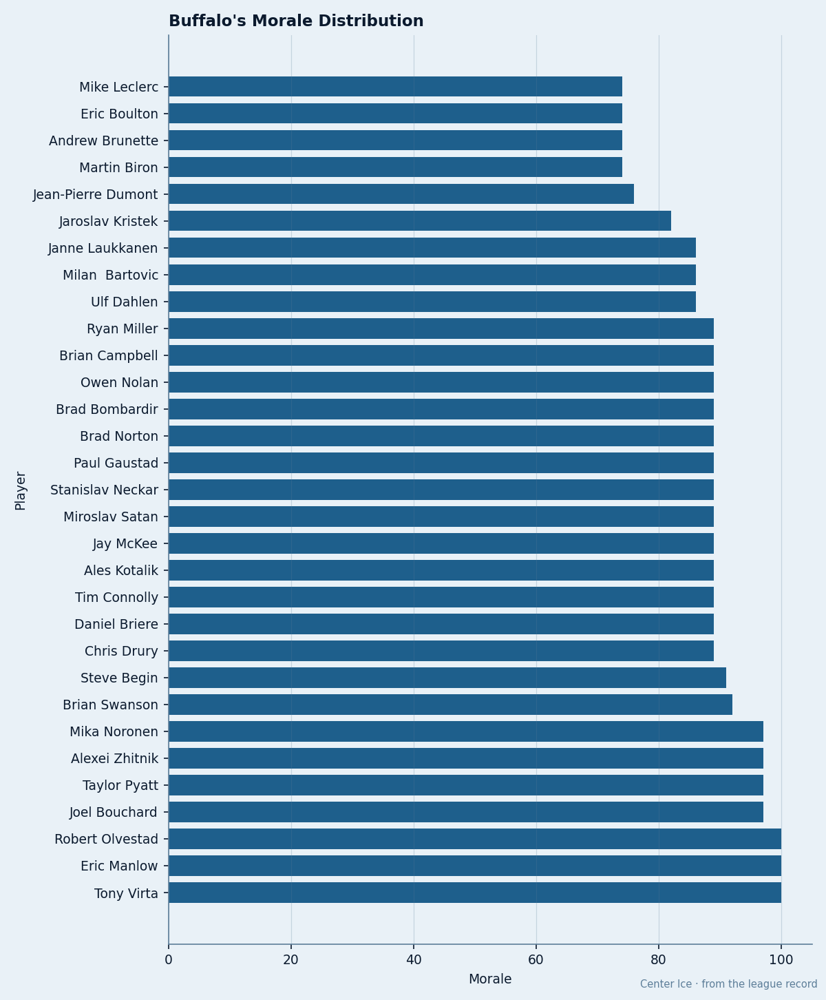

9 Minutes and 55 Minutes: Buffalo Carries 5 of Hockey's 15 Most Miserable Men
The unhappiest players in the league cluster at two extremes of ice time, and no room is worse than Buffalo's
 Doug ReimerAnalytics editor, ex-video coach · The Slot Report
Doug ReimerAnalytics editor, ex-video coach · The Slot Report
Five of the league's 15 lowest-rated men on the Bureau's Morale Scale play for  Buffalo Sabres.
Buffalo Sabres.  Columbus Blue Jackets has 3.
Columbus Blue Jackets has 3.  Los Angeles Kings has 3.
Los Angeles Kings has 3.  Calgary Flames has 2. Buffalo carries half again as many as the next worst room.
Calgary Flames has 2. Buffalo carries half again as many as the next worst room.
The pattern across all 15 men is bimodal. You are either playing 55 minutes a night or you are playing 9. The 15 players split almost perfectly into goalies who start everything and skaters who barely see the ice. Buffalo carries both camps.

 Martin Biron88 sits at 74 on the Morale Scale. He has started 43 of Buffalo's 49 games, an 88% share. He plays 55.7 minutes a night. He earns $2.10M. He has 0 contract years left. He is the most-used goaltender among the 15 and one of the most-used in the league, and he is as miserable as a man who has not played a single shift.
Martin Biron88 sits at 74 on the Morale Scale. He has started 43 of Buffalo's 49 games, an 88% share. He plays 55.7 minutes a night. He earns $2.10M. He has 0 contract years left. He is the most-used goaltender among the 15 and one of the most-used in the league, and he is as miserable as a man who has not played a single shift.
 Mike Leclerc74 sits at 74 too. He plays 9.4 minutes a night across 50 games. He earns $0.90M. He has 0 contract years left.
Mike Leclerc74 sits at 74 too. He plays 9.4 minutes a night across 50 games. He earns $0.90M. He has 0 contract years left.  Andrew Brunette74: 74, 8.6 mpg in 32 games, $1.10M, 1 year left.
Andrew Brunette74: 74, 8.6 mpg in 32 games, $1.10M, 1 year left.  Eric Boulton66: 74, no games on record, $0.40M.
Eric Boulton66: 74, no games on record, $0.40M.  Jean-Pierre Dumont77: 76, 11.8 mpg in 49 games, $1.20M, 1 year left.
Jean-Pierre Dumont77: 76, 11.8 mpg in 49 games, $1.20M, 1 year left.
The gap between these 5 and the rest of Buffalo's room is 8 points. The 6th-lowest man on the roster, Jaroslav Kristek, reads 82. Everyone above him sits at 86 or higher, running to 100. This is a structural problem in how the minutes are divided.
| Player | Morale | MPG | GP | Salary | Contract Years | Overall |
|---|---|---|---|---|---|---|
| Martin Biron | 74 | 55.7 | 43 | $2.10M | 0 | 84 |
| Mike Leclerc | 74 | 9.4 | 50 | $0.90M | 0 | 70 |
| Andrew Brunette | 74 | 8.6 | 32 | $1.10M | 1 | 70 |
| Eric Boulton | 74 | — | — | $0.40M | 0 | 62 |
| Jean-Pierre Dumont | 76 | 11.8 | 49 | $1.20M | 1 | 72 |
The goaltender plays the most hockey in the room. The skaters play the least. Both read 74. Neither workload nor lack of workload alone puts a man at the bottom of the scale. The driver is the sense that the allocation does not match what you can give.
Buffalo pays $44.16M, earns $53.47M in revenue, and posts $20.21M in profit per game. They have 387 prestige points and 0 Cups. Their previous playoff run: 0.
Biron is the sharpest case. A goaltender who plays 88% of his team's games is carrying the club. His overall grade is 84, his club is 9th in the East, 4 points out of the playoff line, and he has no contract after this year. He is playing the most hockey of anyone on the list and earning the least security. Leclerc is the other side: 50 games, 21 points, $0.90M, free agent after this season. He is playing, but at 9.4 minutes a night he is playing to be exposed at 84 overall against a salary that marks him as replaceable.
Brunette and Dumont are both in contract years. Brunette has played 32 games at 8.6 mpg. His shoulder injury cost him time. Dumont plays 11.8 mpg in 49 games. Neither man is going to renegotiate a raise from a bottom-six role. Both are watching Biron play 55.7 a night for a club that can't get above 9th.
The wider league confirms the shape. Among the bottom 15, 4 are goaltenders playing over 54 mpg (Biron 55.7, Denis 65.4, Kidd 60.9, Turek 54.2). 7 are skaters playing under 11 mpg (Knutsen 10.6, Green 10.8, Wright 10.8, Langkow 8.4, Leclerc 9.4, Brunette 8.6, Belanger 8.7). The other 4 have no games on record. Nobody sitting 14 or 16 minutes a night makes this list.
Buffalo's club average is 88.4, 4th-lowest in the league. That number conceals the structure. Five men at 74-76 drag the average below a room where everyone above them reads 86 or better. The bottom is thin and concentrated: 5 men overused or underused with no path out before free agency.
The club has never made the playoffs. They sit 4 points out of 8th with 33 games left. If they make it, the structure holds. If they miss, Biron walks a free agent and the bottom of the Morale Scale gets thinner by one entry and thicker by one departure.